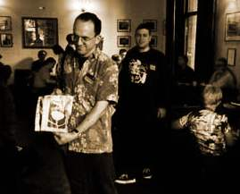

In a change from previous years, CAPTION will be held in Wolfson College, Oxford, a large graduate college in North Oxford, beside the River Cherwell. ☛more

CAPTION runs an auction every year of artwork donated by members -- anything from a black & white sketch to full-colour pages, and plenty of odd artefacts in between. Proceeds from the auction go to a good cause -- in the past this has seen hundreds of pounds go to the Cartoon Art Trust and classes run by Steve Marchant.
There will be an exhibition of the art on the day, and
in addition,
artwork that we receive before the printing deadline will
be printed in the programme for everyone to take away and
treasure forever.
We’re hoping to print a
colour spread in the booklet this year, so go wild and send the fruits of
your labours to:
CAPTION 2004, 18 Hawkins Street, Oxford
OX4 1YD.
This year’s theme (optional, of course) is HISTORY.